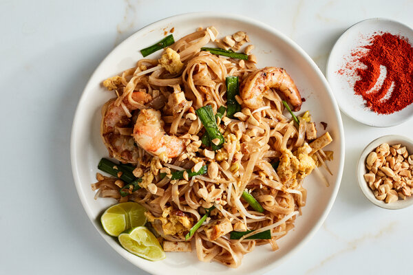

Shrimp Pad Thai

Description
Shrimp Pad thai is a classic thai dish that your wife
almost failed to make for your birthday that one year.
It consists of rice noodles, shrimp, sauce, some greens,
and beansprouts
Shrimp Pad Thai is a common dish that can be found on
the streets with food vendor or at a fancy restaurant
in a big city.
Ingredients
- 8 oz Rice Noodles
- 12 oz Peeled Raw Shrimp
- 2 stalks Scallion
- 4 oz Beansprouts (from your Mother-in-Law)
- Lots of garlic
- Pad Thai Sauce
Steps
- Soak noodles in warm water for 30 mins
- Heat up vegetable oil in a wok on medium-high heat
- Stir fry shrimp until slightly browned
- Add garlic and chopped scallion
- When garlic is fragrant, add drained noodles and pad thai sauce
- Stir occasionally until noodles are coated with sauce
- Serve your husband some bomb ass Shrimp Pad Thai!